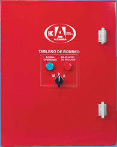

Los tableros contra incendio HIDROCONTROL para bombas eléctricas, además de controlar automáticamente la operación de la motobomba eléctrica también pueden utilizarse en la bomba JOCKEY de forma separada o en el mismo tablero.
•Para motores eléctricos, arranque a tensión plena.
•Arranque y paro automático al cambiar la presión en la red.
•Incluye la función de paro automático o manual.
•Retardo de paro ajustable de 0 a 6 min.
Los tableros HIDROCONTROL para motobomba eléctrica principal se surten completamente armados, e incluyen:
•Selector 3 posiciones. (Manual - Fuera - Automático)
•Contactor magnético |
•Interruptor termomagnético de 25KA en 220V y 10KA en 440V
•Módulo de control
•Cuenta con 3 electrodos para la cisterna.
•Transformador 220/440V para los equipos en 440V
•Gabinete metálico a prueba de polvo y agua, se surte en color rojo.
•Tablilla de conexión.
Luces indicadoras
•Bomba operando
•Bomba en automático
•Bajo nivel de succión. (La bomba no se detiene automáticamente, sólo indica el bajo nivel)
|
 |